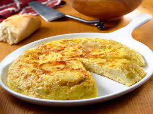

Tortilla Española

Descripción
La Tortilla Española o Tortilla de Papa como también se le conoce, es redonda y gruesa; elaborada comúnmente con papa, cebolla y algunas veces con otros ingredientes como el pimentón y cocinada en aceite de oliva. La tortilla española se puede servir caliente o fría como plato principal y normalmente se acompaña con una ensalada; o también como tapas si se corta en trozos pequeños, un plato muy popular de España.
Ingredientes
½ taza de aceite oliva extra virgen
3 papas medianas rojizas (alrededor de 1 ½ lbs.) peladas y cortadas en rodajas de ¼
1 cebolla amarilla grande, cortada en rodajas finas (alrededor de 1 ½ tazas)
7 huevos
1 cdta. de adobo con pimienta
Instrucciones
- Caliente el aceite a fuego medio, en una sartén antiadherente de 10", y agregue las papas. Cocine, revolviendo ocasionalmente, hasta que las papas estén blandas al perforarlas con un tenedor, por unos 15 minutos (las papas no se deben tornar color marrón). Luego agregue las cebollas al sartén y cocine revolviendo ocasionalmente, hasta que las cebollas se tornen blandas y transparentes y las papas estén completamente cocidas, por unos 10 minutos más. Con cuidado, saque la papa y la cebolla en un colador, reservando una cucharada de aceite de oliva. Ponga a un lado las papas hasta que se enfríen.
- En un tazón, bata los huevos y el Adobo. Agregue la mezcla ya enfriada de cebolla y papa. Revuelva hasta que todo esté bien combinado.
- En el mismo sartén a fuego bajo, caliente el aceite reservado y agregue la mezcla de huevo y papa. Cocine sin revolver, hasta que los huevos comiencen a cocinarse completamente y por debajo empiece a tornarse ligeramente marrón, por unos 10 minutos. Deslice con cuidado la tortilla en un plato plano e invierta nuevamente en el sartén para cocinar totalmente la tortilla.
- Continúe cocinando la tortilla hasta que esté completamente lista, por unos 10 minutos. Sirva en un plato ya sea caliente o fría.